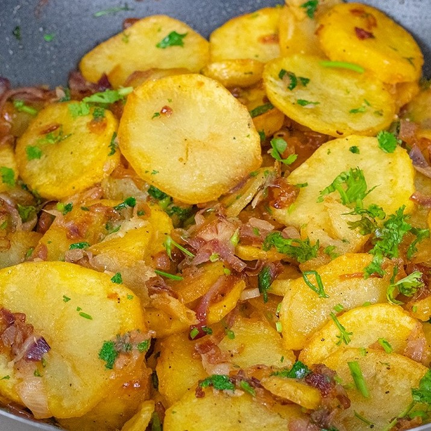

Home
Kenyan Lyonnaise Potatoes

An image of some tasty Kenyan Lyonnaise Potatoes
Ingredients
- 1 kg potatoes
- 1 large onion, thinly sliced
- 4 tablespoons unsalted butter (divided)
- 2 tablespoons olive oil (or your favorite cooking oil)
- Salt to taste
- 2 tablespoons fresh parsley/coriander, chopped (optional, for garnish)
- ground black pepper, to taste (optional)
Steps
- Prepare the Potatoes: Peel the potatoes (optional) and slice them into rounds about 1/4-inch thick. Place the slices in a pot of cold, salted water and bring to a boil. Parboil the potatoes for 5-7 minutes until just tender but not falling apart. Drain and set aside to cool slightly.
- Cook the Onions: While the potatoes are boiling, heat 2 tablespoons of butter and 1 tablespoon of olive oil in a large skillet over medium heat. Add the sliced onions and cook, stirring occasionally, for 8-10 minutes until they are soft and golden brown. Season with a pinch of salt and pepper. Remove the onions from the skillet and set aside.
- Fry the Potatoes: In the same skillet, add the remaining 2 tablespoons of butter and 1 tablespoon of olive oil. Arrange the parboiled potato slices in a single layer (you may need to work in batches). Cook over medium-high heat for 4-5 minutes per side, or until golden and crispy. Season with salt and pepper as they cook.
- Combine: Once all the potatoes are crispy, return the cooked onions to the skillet. Gently toss everything together to combine and heat through for 1-2 minutes.
- Serve: Transfer the Lyonnaise potatoes to a serving dish, sprinkle with chopped parsley (if using), and serve hot. They pair wonderfully with roasted meats, eggs, or as a standalone side dish.